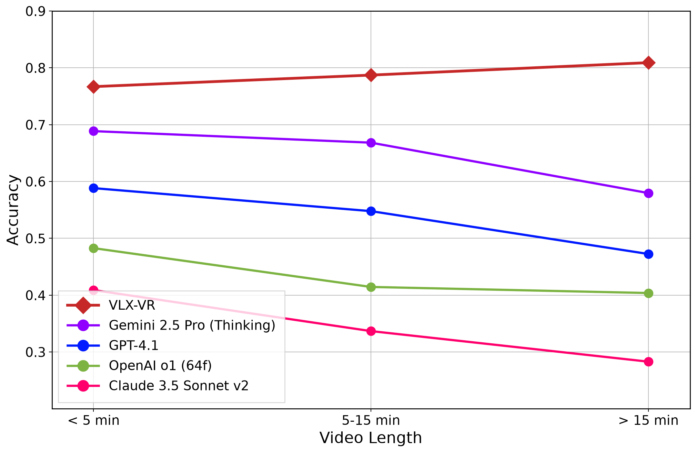

Highlights
- 📊 Leading among peers: On the MINERVA video-reasoning benchmark, VLX-VR reaches 78.8 accuracy, above Seed2.1 Pro (70.7), Gemini 3.5 (68.6), and Seed2.1 Turbo (65.9).
- ⏱ Stable across duration: Using the same three bins as the MINERVA paper (under 5 minutes / 5–15 minutes / over 15 minutes), accuracy is 76.70% / 78.73% / 80.92%. Cross-Duration Accuracy Variance (CDAV) is 2.97, with a three-bin standard deviation of about 1.7 percentage points. Public Gemini 2.5 Pro, GPT-4.1, and similar models drop as videos get longer; VLX-VR does not, and the long-video bin is slightly higher.
- 🧠 Checkable process: MINERVA provides a human-written reasoning trace for every question. On correctly answered items, agreement between the model’s reasoning and the reference trace is 96.2%, so correct results are not mainly lucky guesses among options.
- 🎯 Clear strengths: Reading comprehension 90.8%, situational awareness 90.3%, temporal reasoning 86.0%, numerical reasoning 85.7%—more stable on textual cues, situation, and temporal/numerical reasoning.
1. Introduction
Video understanding is moving from “what is this video about” to “complete multi-step reasoning from frames, text, and the timeline.” VLX-VR targets exactly this layer: Video Reasoning—on videos of variable length, chaining perception, temporal localization, textual cues, and logical steps into a checkable reasoning process, rather than only emitting a final choice.
Many existing VideoQA benchmarks supervise only the final answer. Models can score via language bias, elimination, or chance hits, and evaluation cannot tell “the reasoning was right” from “the answer happened to be right.” MINERVA is designed to fill that gap: every item includes a human-written reasoning trace, so one can score both accuracy and the reasoning process.
This report presents VLX-VR results on MINERVA. The focus is threefold: first, overall accuracy against peer video-reasoning models; second, a duration split to see whether long videos drag performance down; third, a skill-type profile from dataset labels, plus reasoning agreement on correctly answered items.
2. The MINERVA Dataset
MINERVA (Multimodal INterpretablE Reasoning Video Annotations) is a VideoQA benchmark for complex video reasoning. Paper: arXiv:2505.00681; data: google-deepmind/neptune. It is not a short-clip action-classification set; it is built to stress multi-step, multi-skill, multimodal reasoning.
The public setup has the following main properties.
Scale and structure. 1000+ questions covering 200+ videos; each video usually has multiple questions. Every item provides 5 options, the correct answer, and a human-written reasoning trace.
Must be multi-step and multi-skill. Each question is required to combine at least two skills, such as temporal reasoning, counting, causality, goal reasoning, situational awareness, event occurrence, state change, reading (OCR), spatial perception, numerical reasoning (math beyond counting), object recognition, and counterfactual reasoning. MINERVA therefore scores combinatorial ability, not a single perception head.
Multimodal. Some items must combine frames, the timeline, and textual cues; a single frame is not enough.
Wide duration span. Videos range from under 2 minutes to about 100 minutes, with the longest over 1.5 hours, mean about 12 minutes, covering shorts, sports, instruction, lifestyle/tutorials, travel, and other domains. This makes it suitable for testing whether a model only handles short video, or can keep reasoning quality on medium and long video.
Reasoning traces for comparison. Reference reasoning averages about 92 words; about 99.6% contain timestamps, averaging about 4 timestamps per trace, and describe key actions, objects, and logical steps. Evaluation can therefore do reference-based process analysis: whether the model localized the right interval, looked at the right objects, and completed the logic. Human accuracy in the paper is about 92.5%; an earlier frontier model (Gemini 2.5 Pro Thinking) is about 66.2%, so the set still has headroom.
For this report, MINERVA supplies three things at once: an overall Video Reasoning score, long-video ability by duration, a skill-type profile, and a gold reasoning trace to measure whether the process agrees when the answer is correct.
3. Evaluation Setup
The evaluated system is VLX-VR. The task is video reasoning on MINERVA: given a video and a question, output a choice and a reasoning process.
Peer video-reasoning numbers are Seed2.1 Pro, Seed2.1 Turbo, and Gemini 3.5, taken from the Seed site Seed2.1; public numbers from the MINERVA paper are listed as well. The primary metric is accuracy; on the process side, we compute agreement between model reasoning and the MINERVA reference trace on correctly answered items. Skill types follow the dataset annotations. Duration bins match the paper’s Fig. 3(c): under 5 minutes, 5–15 minutes, over 15 minutes, compared against the paper’s public duration curves.
Table 1 is the overall accuracy comparison; the remaining tables are slices from this evaluation.
4. Overall Results: Ahead of Peer Video-Reasoning Models
On MINERVA video reasoning, VLX-VR accuracy is 78.8, above Seed2.1 / Gemini 3.5 in this comparison, and above Gemini 2.5 Pro Thinking (66.20) as published in the paper.
Table 1. MINERVA Video Reasoning accuracy. Scores are MCQ accuracy (%). VLX-VR is this evaluation; Seed2.1 Pro, Seed2.1 Turbo, and Gemini 3.5 are from the Seed site Seed2.1; the rest are public MINERVA-paper results.
| Model | Score |
|---|---|
| VLX-VR | 78.8 |
| Seed2.1 Pro | 70.7 |
| Seed2.1 Turbo | 65.9 |
| Gemini 3.5 Flash | 68.6 |
| Gemini 2.5 Pro Thinking | 66.20 |
| Gemini 2.5 Flash Thinking | 57.30 |
| Gemini 2.0 Flash | 53.47 |
| Claude 3.5 Sonnet v2 | 31.28 |
| GPT-4.1 | 53.99 |
| GPT-4o | 45.54 |
| OpenAI o1 | 43.48 |
| Qwen2.5-VL | 35.05 |
| VideoLLaMA3 | 35.91 |
| InternVideo2.5 | 35.18 |
| Random | 20.00 |
| Human | 92.54 |
This is 8.1 points above Seed2.1 Pro, 10.2 above Gemini 3.5, 12.9 above Seed2.1 Turbo, and 12.6 above Gemini 2.5 Pro Thinking in the paper. The gap is not “crushing short-video recognition”; it is better overall on a multi-step, multi-skill set that includes medium and long video. 78.8 is still below the human ceiling of 92.54, but it leads this comparison.
5. Duration Split: Long-Video Ability Holds
One of MINERVA’s values is duration span. Paper Fig. 3(c) splits videos into three bins: under 5 minutes, 5–15 minutes, over 15 minutes. Public models (Gemini 2.5 Pro Thinking, GPT-4.1, OpenAI o1, Claude 3.5 Sonnet v2) drop clearly as duration increases. This evaluation uses the same bins.
Table 2. Accuracy by video duration (same bins as paper Fig. 3(c)).
| Video duration | Accuracy |
|---|---|
| Under 5 minutes | 76.70% |
| 5–15 minutes | 78.73% |
| Over 15 minutes | 80.92% |
All three bins sit around 77–81%: 76.70% under 5 minutes; 78.73% in the middle bin; 80.92% over 15 minutes, rising rather than falling. The three-bin range is 4.22 percentage points.
Table 3. Duration split versus public models in the MINERVA paper (accuracy %). Paper-model numbers are digitized from the official Fig. 3(c) SVG; VLX-VR is Table 2. Qwen2.5-VL, VideoLLaMA3, and InternVideo2.5 from the paper are omitted (open-source lag; not used in this figure comparison).
| Model | Under 5 minutes | 5–15 minutes | Over 15 minutes |
|---|---|---|---|
| VLX-VR | 76.70 | 78.73 | 80.92 |
| Gemini 2.5 Pro (Thinking) | 68.87 | 66.84 | 57.97 |
| GPT-4.1 | 58.84 | 54.79 | 47.25 |
| OpenAI o1 | 48.28 | 41.45 | 40.38 |
| Claude 3.5 Sonnet v2 | 40.90 | 33.68 | 28.30 |
On the short-video bin VLX-VR already exceeds Gemini 2.5 Pro (76.70 vs 68.87); beyond 15 minutes, Gemini falls to 58.0 and GPT-4.1 to 47.3, while VLX-VR rises to 80.92. That is a harder point than the overall 78.8: long video does not punch through the reasoning level.

Figure 1. MINERVA accuracy by duration. VLX-VR is the red diamond; others are closed-source counterparts from paper Fig. 3(c) (Human excluded; the three open-source models excluded).
To collapse “how duration affects accuracy” into one number, define Cross-Duration Accuracy Variance (CDAV): equally weighted population variance of the three-bin accuracies
where \(n=3\) and \(\mathrm{Acc}_{i}\) is in percentage points. The three-bin mean is 78.78%, CDAV = 2.97 (percentage points\(^{2}\)), corresponding to a standard deviation of \(\sigma=1.72\) percentage points. The variance is still small, meaning accuracy does not swing hard when input duration switches among short / medium / long. The metric weights the three bins equally and is not weighted by item count.
Conclusion: Duration has a small effect on VLX-VR’s overall level (CDAV = 2.97); the three bins stay in 77–81%, and the long-video bin is slightly higher. This differs from the paper’s picture of public models sliding with duration, and indicates VLX-VR can attach reasoning ability to medium and long video.
6. Task Types: Stronger on Events, Text, and Causality
Skill types follow MINERVA annotations. Under the overall 78.8% accuracy, advantages concentrate on textual cues, situation, and temporal/numerical reasoning.
Table 4. Accuracy by skill type.
| Skill type | Accuracy |
|---|---|
| Counting | 66.67% |
| Object recognition | 82.01% |
| Event occurrence | 82.81% |
| Listening comprehension | 75.19% |
| Temporal reasoning | 85.95% |
| Reading comprehension | 90.76% |
| Numerical reasoning | 85.71% |
| Spatial perception | 73.47% |
| Causal reasoning | 72.73% |
| Counterfactual reasoning | 74.19% |
| Situational awareness | 90.32% |
| Goal reasoning | 76.92% |
| State change | 69.23% |
Strengths. Reading comprehension 90.8%, situational awareness 90.3%, temporal reasoning 86.0%, numerical reasoning 85.7%, all clearly above overall; event occurrence 82.8% and object recognition 82.0% are also above overall. VLX-VR is better at chaining textual cues, situation, and temporal/numerical information into a complete reasoning chain.
Weaknesses. Counting, state change, causal reasoning, spatial perception, and similar skills remain below overall; counting is still the largest gap. Further work will continue here.
7. Reasoning-Process Evaluation
What sets MINERVA apart from VideoQA sets that only give a final answer is a human reasoning trace on every item. On correctly answered items, agreement between the model’s reasoning and the reference trace is 96.2%.
That rate is high: when the answer is correct, the model’s steps align strongly with the annotated trace, so the 78.8% accuracy has process support rather than mainly option guessing. This is VLX-VR’s advantage over video-QA setups that only emit a final answer.
8. Cases
Under 5 minutes
| YouTube | Duration | Question | Answer | Correct answer |
|---|---|---|---|---|
| https://www.youtube.com/watch?v=-1UXq-FzmQA | ~2 min 51 s | What is the football broadcast's primary advertiser? (0) New England Savings. (1) FS1. (2) Quality Jewelers Sales & Service. (3) Hammington Lumber Company. (4) Doritos. | 约 1分04秒，画面中央出现 Quality JEWELERS SALES & SERVICE 品牌动画：白底、黑色花体字、蓝色钻石图标，标注珠宝销售与服务。这是全片唯一完整呈现的广告主动画。 其余文字都是场边广告牌或记分牌，不是转播主打广告：约 1分处远处记分牌有 LEADBETTER'S TAILGATE LOT；约 1分21秒–1分34秒场边围挡出现 Maine Savings（不是选项里的 New England Savings）；约 1分05秒–1分11秒是 VILLANOVA vs MAINE 比分牌。 FS1、Hammington Lumber Company、Doritos、New England Savings 均未出现。因此本场橄榄球转播的主要广告主是 Quality Jewelers Sales & Service。 最终答案：Quality Jewelers Sales & Service. | Quality Jewelers Sales & Service. |
| https://www.youtube.com/watch?v=--C26cvIFdY | ~4 min 26 s | What sequence of events occur to put Hawaii up 24 to 13 against UC Irvine? (0) #4 in white dribbles the ball down court then passes it to #10 in white who dunks the ball. (1) #0 in white inbounds the ball to #4 in white who then makes an immediate fadeaway. (2) #4 in white gets the rebound and passes it to #0 in white who then makes a 3 point shot. (3) #4 in white steals the ball and dribbles down court before making a dunk. (4) #10 in white steals the ball and passes it to #4 in white who makes a layup. | 约 1分–2分出现对阵 UC Irvine 的集锦。记分牌依次为 UC IRVINE 13 - HAWAII 17（约 1分34秒，首节剩 2:12）、13-21（约 1分40秒，首节剩 1:16），随后切到 17-28。 约 1分34秒–1分39秒：夏威夷球员欧洲步上篮，没有扣篮、抢断或后仰跳投。 约 1分40秒–1分49秒（字幕 REBOUND & TRANSITION）：UC Irvine 投篮不中 → 白队 4 号抢到防守篮板 → 运球推进，经 25 号中转后传给三分线外的白队 0 号 → 0 号三分命中。这一记把夏威夷得分从 21 打到 24，形成 24-13。记分牌更新略有延迟。 该时段没有扣篮（女子比赛），也没有 0 号发球给 4 号后仰跳投、4 号抢断后扣篮、10 号抢断传 4 号上篮。把比分打到 24-13 的序列是：4 号抢篮板，传给 0 号，0 号投进三分。 最终答案：#4 in white gets the rebound and passes it to #0 in white who then makes a 3 point shot. | #4 in white gets the rebound and passes it to #0 in white who then makes a 3 point shot. |
5–15 minutes
| YouTube | Duration | Question | Answer | Correct answer |
|---|---|---|---|---|
| https://www.youtube.com/watch?v=-5Uz0Pz-mI0 | ~6 min 51 s | Which team has the first fast break of the game? (0) Marvin Tepper. (1) Yannik Baier. (2) There are no fast breaks. (3) Bulls. (4) Indians. | 开场对阵图（约 7 秒）显示本场为 Saale Bulls（主场，红黑队服）对 EC Hannover Indians（白色/红蓝队服），场馆是 Halle/Saale 的 Sparkassendom。 开场争球后，第一次端到端快速反击发生在约 27 秒：白队 Indians 的 9 号在本方防守区得球，带球冲过全场，约 32 秒攻入对方区域，约 42 秒射门被 Bulls 门将扑出，约 56 秒球门前发生冲突、裁判介入。此前红黑队没有更快的反击，只有开球、争抢和传射。 因此第一次快攻由 Indians 发起。Marvin Tepper、Yannik Baier 是球员名，不是队伍层面的答案；也不是「没有快攻」，更不是 Bulls。 最终答案：Indians. | Indians. |
Over 15 minutes
| YouTube | Duration | Question | Answer | Correct answer |
|---|---|---|---|---|
| https://www.youtube.com/watch?v=FUJYcbCZFeI | ~16 min 07 s | How many lightbulbs appear on the screen at 00:13? (0) 8. (1) 10. (2) 6. (3) 1. (4) 13. | 灯泡特效出现在视频开头。约 12.8 秒开始出现灯泡图形；恰好 00:13（约 13.0 秒）这一帧，屏幕上共有 8 个灯泡：6 个处于渐显、只露出一部分，2 个已经完全明亮。 题目问的是该时刻屏幕上出现多少个灯泡，应按画面里渲染出来的全部灯泡图形计数，而不是只数点亮的那 2 个。因此是 8，不是 10、6、1 或 13。 最终答案：8. | 8. |
| https://www.youtube.com/watch?v=vbUlJr1s7qU | ~39 min 23 s | How many rocks would be in the "Africa Rocks" sign if 3 were subtracted? (0) 5. (1) 3. (2) 4. (3) 1. (4) 2. | 约 22分14秒–22分24秒出现景观标识牌 CONRAD PREBYS AFRICA ROCKS：上方棕色底白字 CONRAD PREBYS，下方立体字 AFRICA（深蓝黑）与 ROCKS（亮蓝）。两个单词之间堆叠着 4 块彩色装饰岩石，自上而下为红棕色小石块、浅橄榄绿色扁平大石块、红棕色/灰紫色椭圆石块、浅棕黄色圆石块。 上方 CONRAD PREBYS 旁另有一块带蜗牛造型的浅绿石块，不属于两词之间的装饰序列，不计入本题。 牌上岩石为 4 块，减去 3 块还剩 1 块。 最终答案：1. | 1. |
| https://www.youtube.com/watch?v=WmpPEoBp48A | ~90 min 03 s | What object surrounds the avatar of the second grandmaster the host introduces? (0) Curved daggers. (1) Golden Laurel. (2) Shark teeth. (3) Green wreath. (4) Garland of Roses. | 主播开头依次点开玩家资料页介绍： - 约 77 秒：Brilliant Frog of White Meadow（双项 Grandmaster），头像环绕金色月桂花环——这是第 1 位宗师，也是干扰项 Golden Laurel 的出处。 - 约 1分51秒：Lina Kitty（Expert / Grandmaster），头像环绕鲨鱼齿边框（银色尖牙、紫色基底、粉色丝带）——按介绍顺序是第 2 位宗师。 - 约 2分18秒：HudsonHornet250，翼状边框。 - 约 2分45秒：Sir Tyler，紫色尖刺维京风格边框。 - 约 4分：Dignia22（双项 Grandmaster），同样是银色鲨鱼齿边框。 - 约 4分47秒：General Bains 15708（非宗师），翼状边框。 按介绍顺序，第二位宗师是 Lina Kitty，头像环绕物是鲨鱼齿。即便按「两项都是 Grandmaster」计，第二位是 Dignia22，环绕物仍是鲨鱼齿。金色月桂属于第一位宗师；绿色花环、玫瑰花环、弯匕首都没有出现在第二位宗师头像上。 最终答案：Shark teeth. | Shark teeth. |
9. Conclusion and Next Steps
On MINERVA, VLX-VR reaches 78.8 video-reasoning accuracy, above Seed2.1 and Gemini 3.5 in this comparison. With the paper’s same three bins (under 5 minutes / 5–15 minutes / over 15 minutes) the split is 76.70% / 78.73% / 80.92%, CDAV = 2.97; public models in the paper slide with duration, VLX-VR does not, and the long-video bin is slightly higher. Reasoning agreement on correctly answered items is 96.2%, so correct results have process support. By skill type, reading comprehension, situational awareness, temporal reasoning, and numerical reasoning are clearly more stable. Counting, state change, causal reasoning, spatial perception, and similar skills still have room; further work will continue here.